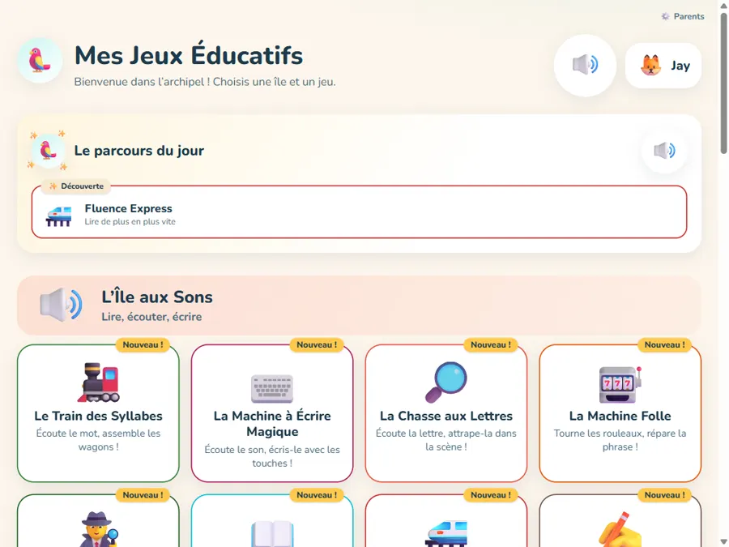
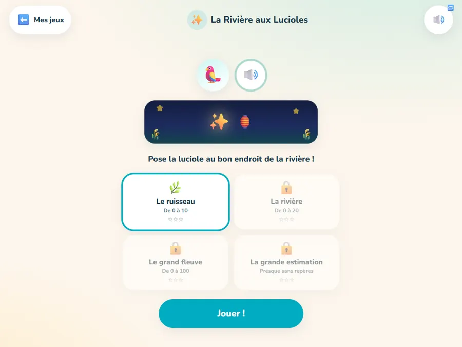
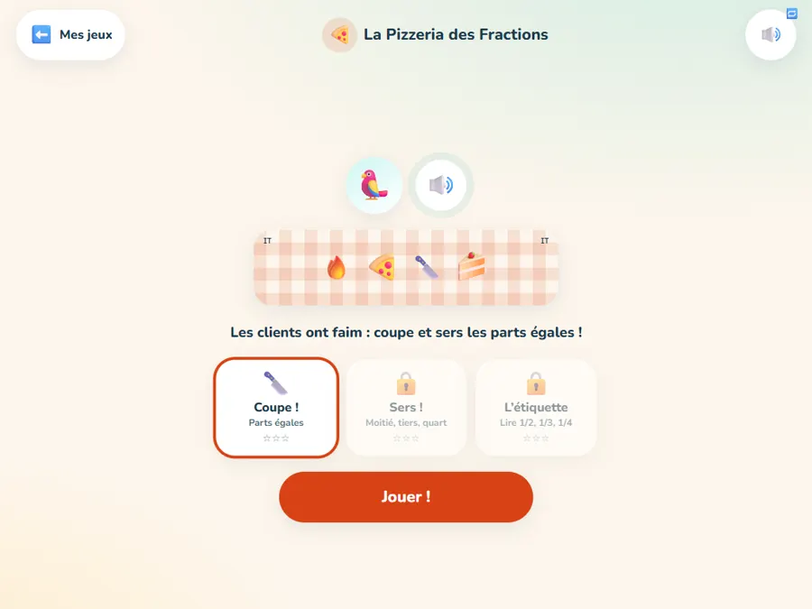
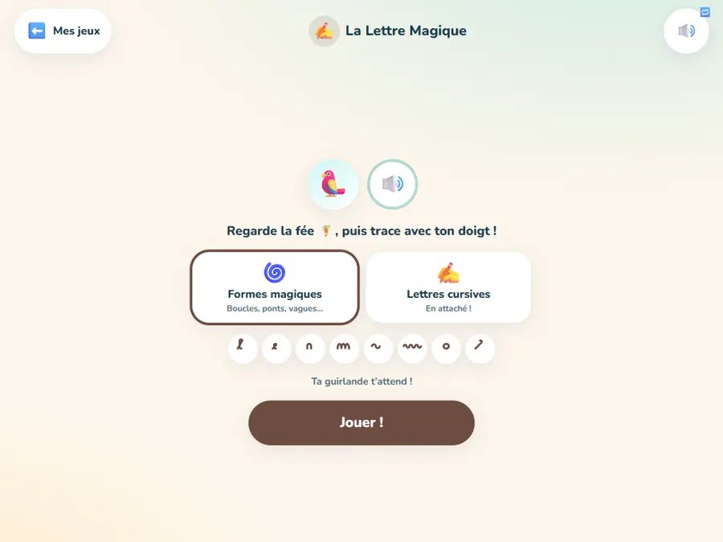

24 jeux pour apprendre à lire, compter et raisonner de la Grande Section au CE1 — construits par un parent, alignés sur les programmes 2025, et offerts à tous les enfants.
▶ Jouer maintenant
En France, il n’existait plus aucun outil d’apprentissage adaptatif gratuit : les références mondiales n’existent qu’en anglais, les outils français sont devenus payants, et le gratuit historique vit de la publicité. Ce site occupe la case vide — et il est structurellement incorruptible : il n’a rien à vendre.
Zéro QCM. Il casse des barres de dix, assemble des wagons-syllabes, règle des aiguilles, trace des lettres cursives, coupe des pizzas en parts égales. Le geste EST la compétence.
Jamais le mot « faux », jamais de game over. Une erreur déclenche un gag, puis une explication visuelle, un nouvel essai, et la notion revient plus tard. Indice automatique après deux échecs.
1 650 consignes en voix française naturelle, embarquées dans l’application. Un enfant qui ne sait pas lire joue seul de bout en bout.
Seuls les premiers essais comptent. Pas de streaks, pas de classement, pas de « reviens demain » : la motivation vient du jeu, pas de la manipulation.
75 compétences officielles (BO n°41 du 31/10/2024) cartographiées : tempo graphémique du CP, problèmes en barres, motifs organisés, fluence 30/50/70, fractions précoces du CE1.
Des parties de 3 à 5 minutes qui se terminent proprement. Vers 15 minutes, la mascotte propose gentiment de conclure — conformément aux repères officiels.
Cinq îles, 24 jeux profonds à contenu procédural — jamais deux fois le même puzzle — plus 5 classiques de la première génération.



Un espace dédié (derrière une petite multiplication) vous montre exactement où en est votre enfant.
Chaque attendu officiel des programmes, colorié selon la maîtrise réelle, situé par rapport à la période en cours à l’école (P1 à P5).
Les notions en difficulté (moins de 80 % de réussite au premier essai) sont signalées, avec les jeux exacts pour les retravailler ensemble.
Chronométrez une lecture à voix haute : le score en mots par minute se place sur les repères officiels 30 / 50 / 70. L’enfant, lui, ne voit jamais de chiffre.
Un profil par enfant. Tout est stocké sur votre tablette — aucun serveur, aucun cookie, aucun compte. Export JSON pour changer d’appareil.
Sur tablette, ajoutez le site à l’écran d’accueil : il s’installe comme une application et fonctionne ensuite sans connexion.
▶ Entrer dans l’Archipel